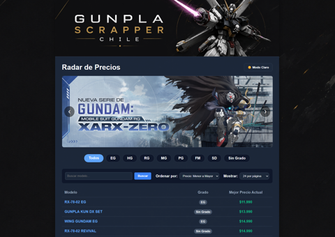
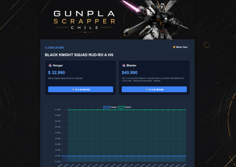
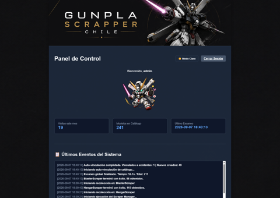

Sobre mí
Ingeniero en Computación y Desarrollador Full Stack con sólidas bases en diseño de arquitectura, bases de datos relacionales y metodologías ágiles (Scrum Certified). Experiencia comprobada en liderazgo técnico, control de calidad (QA) y resolución de problemas complejos.
Altamente motivado por entornos remotos y desarrollo de software escalable, aportando valor a través de la optimización de procesos, documentación técnica y trabajo en equipo colaborativo.
Descargar CV (PDF)Experiencia Profesional
- Prestación integral de servicios de consultoría informática y administración de redes para organizaciones locales.
- Implementación de soluciones de impresión centralizada y configuración de sistemas de facturación electrónica.
- Mantenimiento de hardware a medida e integraciones de software para optimizar entornos informáticos de los clientes.
- Revisiones de código bajo estándares SOLID, Clean Code y patrones de diseño para más de 40 arquitecturas de software.
- Tutoría en refactorización y resolución de problemas técnicos complejos.
- Administración de infraestructura TI, servidores y redes.
- Implementación de políticas de seguridad con PfSense logrando una reducción del 35% en incidentes de red.
Proyectos Destacados
GunplaScrapper-Chile
Herramienta de automatización y Web Scraping para monitoreo de mercado en tiempo real de coleccionables en Chile. Desarrollo enfocado en extracción de datos, procesamiento y centralización de información.



Stack Técnico y Educación
Conocimientos Técnicos
Python, NodeJS, Java, C#, C++, Go Lang
JavaScript, ReactJS, Vue, HTML/CSS
PostgreSQL, MySQL, Oracle, MongoDB
Git, Docker, PfSense (Avanzado), Linux
Educación y Certificaciones
Universidad Católica del Maule (2021-2023)
CFT San Agustín (2018-2021)
SCRUMstudy (2024)
Conversemos sobre tu próximo proyecto.
Hablemos de desarrollo, consultoría o nuevas oportunidades profesionales. Escríbeme y hagamos realidad tu idea.